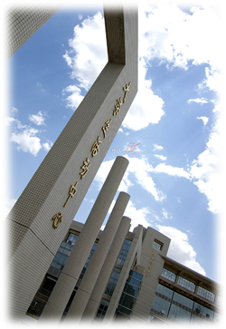
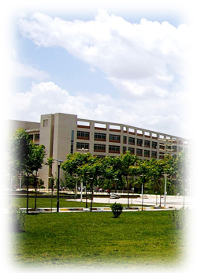

西安邮电大学坐落于历史文化名城西安南郊文化区，雁塔校区与唐代大雁塔毗邻，长安校区位于终南山北麓，是一所以工为主，以信息科学技术为特色，工、管、理、经、文、法、艺多学科协调发展的普通高等学校，是国家在西北地区布局的唯一邮电通信类高等学校、教育部“卓越工程师教育培养计划”实施高校、中国人民解放军后备军官选拔培养基地、全国首批试办边防军人子女预科班的高校。学校被中共陕西省委、陕西省人民政府授予陕西省“先进集体”称号、陕西省“文明校园”称号，被陕西省教育厅授予“依法治校示范校”称号，校党委被省委教工委授予“陕西高等学校先进基层党委”称号。
学校占地近1500余亩，校舍面积73余万平方米，仪器设备总值近2亿元，图书馆藏书近150万册。现有全日制在校生16000余人。设有通信与信息工程学院、电子工程学院、计算机学院、自动化学院、理学院、经济与管理学院、管理工程学院、人文社科学院、马克思主义教育研究院、国防教育学院、国际教育学院、物联网与两化融合研究院、外语系、数字媒体艺术系、继续教育学院、体育部等教学研究机构。有11个一级硕士点、32个二级硕士点，4个工程硕士授权领域和1个MBA专业学位授权点，43个本科专业，6个省部级重点学科。有1个国家级特色专业建设点，6个省级特色专业建设点，3个省级名牌专业。有5个原信息产业部重点实验室，4个陕西省重点研究中心，11门省级精品课程，5项省级优秀教材奖，4个省级人才培养模式创新实验区，3个省级实验教学示范中心。学校拥有1个国家级教学团队，4个省级教学团队。现有专任教师总数965人，其中教授116人，博士204人。教师队伍中有国家“千人计划”特聘专家、新世纪“百千万人才工程”国家级人选、教育部新世纪优秀人才支持计划人选、陕西省“百人计划”特聘专家、教育部高等学校骨干教师资助计划人选、国家有突出贡献中青年专家、全国优秀教师、省级教学名师等国家和省级荣誉称号获得者43人次，外聘院士6人，客座教授78人。
近5年来，全校共承担国家“863”计划、国家自然科学基金、国家社会科学基金、国家“242”信息安全计划、国家软科学研究计划、国家重大科技专项等国家级和省部级科研项目230项，获国家级、省部级科技成果奖励25项，其中“40Gb/s SDH（STM—256）光纤通信设备与系统”获2008年国家科学技术进步二等奖，“TD—SCDMA基站系统关键技术研究、设备研制及产业化”获2009年国家科技进步二等奖，“虎符TePA”2010年被国际标准化组织（ISO/IEC）批准为国际标准。近年来，陕西省（13115）通信专用集成电路设计工程技术研究中心、陕西省两化融合创新研究中心、陕西省法庭科学电子信息实验研究中心等省级创新平台相继落户学院，并依托这些平台，在社会服务方面取得了显著成绩，为推动陕西经济社会建设和行业发展做出了积极贡献。 
学校先后与德国、美国、加拿大、日本、法国等十多个国家及香港、台湾地区的30余所大学、学术机构建立了合作关系；与美、英、德、法等国多所大学签署了“1+2+1”、“2+2”、“4+1+2”等合作培养协议，使在校优秀学生有机会赴发达国家学习并取得中外双方互认的学位。作为我国西北地区唯一一所承担亚太电信组织（APT）和东盟（ASEAN）培训任务的普通高校，学校先后为亚太和东盟国家培养了多批电信领域的中高级技术人员和管理人员。学校还是国际电联中国互联网培训中心之一，与美国思科公司、印度塔塔公司及国内的华为公司、中兴通讯、大唐电信、西北5省（区）通信运营企业等著名企业建立了科研和人才培训方面的战略合作关系。
建校60年来，为国家培养了6万多名优秀人才，毕业生大多在电信、移动、联通等通信运营企业及华为公司、大唐电信、中兴通信、诺基亚等通信制造企业或高校、研究机构工作，成为所在单位的业务骨干，深受用人单位欢迎。学校以“为企业提供最短时间能适应企业工作的优秀人才”为培养目标，按照企业用人要求对大学生进行技术应用能力和职业素质培训，成立 IT 应用型人才实训中心，通过与企业的合作，探索出“企业对接定制培养”、“3+1 创新教育培养”等多种人才培养模式，深受企业和大学生的欢迎，开辟了学生就业的有效途径，提高了毕业生的就业能力。近年来，本科生就业率达91%以上，在省属高校名列前茅。这种实践创新的人才培养模式得到社会各界广泛关注，中央电视台、《光明日报》、《中国教育报》、《中国青年报》、《科技日报》、《陕西日报》、陕西电视台等多家媒体对此作了专题报道。 
面向新世纪对人才的新要求，面对国家调整振兴电子信息产业新规划，学校以科学发展观为统领，全面贯彻落实《国家中长期教育改革和发展规划纲要》和陕西省《实施意见》，坚持质量立校、人才强校、特色兴校战略，全面实施教学质量工程，大力推进素质教育，依托行业平台，突出办学特色，加强内涵建设，不断增强学校的综合实力和核心竞争力，提高学校的科技贡献率和国际化程度，努力建设特色鲜明、国内知名、国际有影响的现代邮电大学。（2012年5月3日更新）